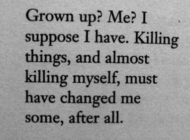

3/7/2023

omg...
I apologize for my absence,
as life has kept me busy.
However, I now have a little
time to provide an update.
So, my holidays have finally begun,
and I've traveled back to my home
country with high hopes of enjoying and relaxing.
But oh boy, relaxation seems to be a distant dream here.
And guess what?
My driving skills are absolutely flawless
no accidents or casualties,
just pure driving perfection.
Oh, and by the way,
I'm totally fine,
except for this tiny illness that
I'm keeping a secret because
I'm just too perfect to let anyone worry about me.
Blah blah, you know how it is.
Oh my goodness, guess what, folks?
I finally received the result for my computer essay,
which had to be sent all the way to
the UK Board for a thorough check.
Can you believe it?
I dedicated a whopping three months of my life to that masterpiece,
but hey, it was totally worth it.
Drumroll, please... I scored 84 out of 100!
Can you comprehend the magnitude of this achievement?
Getting marks in the 80s and 90s is like finding
a needle in a haystack there,
with a measly 0.9% chance of success.
But of course, my hard work and
unparalleled brilliance paid off once again.
Now, I must bid you adieu and log off,
because I have a blog and a poem to write, you know?
And don't forget, I'm here to relax,
so I'll be heading out for some leisurely activities.
Ta-ta!